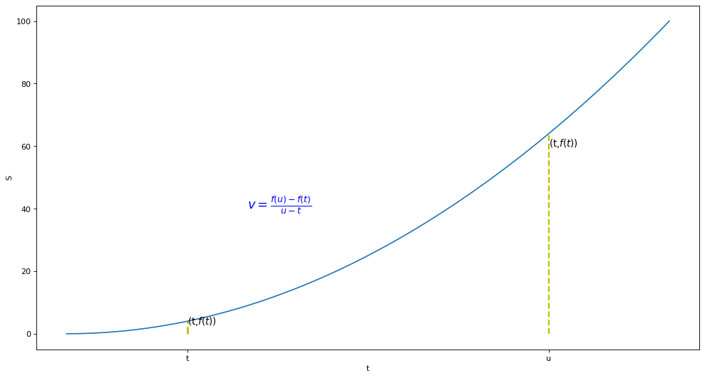
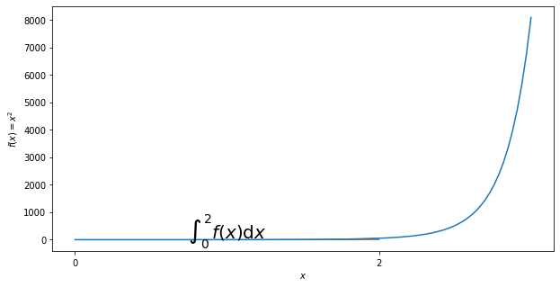

from matplotlib import pyplot as plt
import numpy as np
from matplotlib.patches import Polygon
导数
引入
- \(平均速度=\frac{位移}{时间}\)
plt.figure(figsize=(15,8),dpi=80)
x=np.linspace(0,10,num=100)
y=x**2
plt.plot(x,y)
plt.xlabel('t')
plt.ylabel('S')
x0=2
y0=4
plt.plot([x0, x0,], [0, y0,], 'k--', linewidth=2.5,color='y')
#plt.scatter([x0, ], [y0, ], s=50, color='r')
x1=8
y1=64
plt.plot([x1, x1,], [0, y1,], 'k--', linewidth=2,color='y')
xtick_labels = ['t','u']
plt.xticks([x0,x1],xtick_labels)
#plt.scatter([x0, ], [y0, ], s=50, color='r')
plt.annotate(s='(t,$f(t)$)',xy=(2,4) ,xycoords='data',xytext=(2,3), fontsize=12)
plt.annotate(s='(t,$f(t)$)',xy=(8,64) ,xycoords='data',xytext=(8,60), fontsize=12)
plt.text(3,40,r'$v=\frac{f(u)-f(t)}{u-t}$',fontdict={'size': 16, 'color': 'b'})
plt.show()

- h=u-t
- 当t与u无限接近时，h无限接近于0，即瞬时速度
plt.figure(figsize=(15,8),dpi=80)
x=np.arange(0,10,0.1)
y=x**2
plt.plot(x,y)
plt.xlabel('t')
plt.ylabel('S')
x0=2
y0=4
plt.plot([x0, x0,], [0, y0,], 'k--', linewidth=2.5,color='y')
#plt.scatter([x0, ], [y0, ], s=50, color='r')
x1=2.5
y1=2.5*2.5
plt.plot([x1, x1,], [0, y1,], 'k--', linewidth=2,color='y')
xtick_labels = ['x','x+h']
plt.xticks([x0,x1],xtick_labels)
x2=np.arange(0,10,0.1)
y2= 2*x
plt.plot(x2,y2,linestyle='--')
plt.text(3,40,r'$\lim_{x \to h}=\frac{f(x+h)-f(x)}{h}$',fontdict={'size': 16, 'color': 'b'})
plt.show()

\[f'(x)=\lim{\Delta x \to 0}\frac{f(x+\Delta x)-f(x)}{\Delta x}\]
- \(\Delta x=x_新-x\)
- \(\Delta y=y_新-y\)
同理可得
\[f'(x)=\lim{\Delta x \to 0}\frac{\Delta y}{\Delta x}\]
假设x小到以至于几乎注意不到，用\(dx\)，表示x中十分微小得变化
偏导
一个多变量的函数的偏导数，就是它关于其中一个变量的导数而保持其他变量恒定（相对于全导数，在其中所有变量都允许变化）。偏导数在向量分析和微分几何中是很有用的。
例子
圆锥的体积\(V(r,h)=\frac{r^2\pi h }{3}\)
- \(\frac{\partial V}{\partial r}=\frac{2 \pi r h }{3}\) 高度固定，体积变化率
- \(\frac{\partial V}{\partial r}=\frac{\pi r ^2 }{3}\) 半径固定，体积变化率
微分
求和
plt.figure(figsize=(15,8),dpi=80)
x=np.arange(0,12,3)
y=x**2
plt.bar(x,y,width=4)
xtick_labels = ['t{}'.format(i) for i in x]
plt.xticks(x,xtick_labels)
plt.xlabel('t')
plt.ylabel('v')
plt.show()

\[总位移=\sum_{j=1}^{n}v_j(t_j-t{j-1})\]
积分
考虑v是t得连续函数时
plt.figure(figsize=(15,8),dpi=80)
x=np.arange(0,10,1)
y=x**2
plt.plot(x,y)
plt.bar(x,y,width=1,alpha=0.3,color='g')
xtick_labels = ['t{}'.format(i) for i in x]
plt.xticks(x,xtick_labels)
plt.xlabel('t')
plt.ylabel('v')
x0=4.5
y0=25
plt.plot([x0, x0,], [0, y0,], 'k--', linewidth=2,color='r')
#plt.scatter([x0, ], [y0, ], s=50, color='r')
x1=5.5
y1=25
plt.plot([x1, x1,], [0, y1,], 'k--', linewidth=2,color='r')
x2=5
y2=25
plt.plot([x2, x2,], [0, y2,], 'k--', linewidth=3,color='r')
plt.annotate(s='p',xy=(4.5,0) ,xycoords='data',xytext=(4.5,-3), fontsize=12,color='r')
plt.annotate(s='q',xy=(5.5,0) ,xycoords='data',xytext=(5.5,-3), fontsize=12,color='r')
plt.annotate(s='c',xy=(5,25) ,xycoords='data',xytext=(5,30), fontsize=12,color='r')
plt.text(3,40,r'$S\approx\sum_{j=1}^n{v(c_j)(t_j-t_{j-1})}$',fontdict={'size': 16, 'color': 'y'})
plt.show()

定义
\[\int_a^bf(x)\mathrm{d}x\]
- 函数从a到b的积分
- a，b为积分极限
- \(dx\)说明水平轴的变量
\[\int_a^bf(x)\mathrm{d}x=\lim_{mesh \to 0}\sum_{j=1}^n{v(c_j)(t_j-t_{j-1})}\]
- \(c_j\)为\(x_1,x_2\)区间内任意值
- mesh表示\((x_1-x_0)\),\((x_2-x_1)\)间隔值
区分：
位移：\(\int_a^b v(t)\mathrm{d}x\)
路程：\(\int_a^b ｜v(t)｜\mathrm{d}x\)
计算
def f(x):
return np.exp(x*x)
x=np.linspace(0,3,num=100)
fig,ax=plt.subplots(figsize=(10,5))#绘制8*5的图形
plt.plot(x,f(x))
a,b=0,2#积分域0到1
ix=np.linspace(a,b)
iy=f(ix)
verts=[(a,0)]+list(zip(ix,iy))+[(b,0)]#表示积分的区域
#使用Polygon函数填充，表面颜色是0.7，边沿颜色是0.5
poly=Polygon(verts,facecolor='0.7',edgecolor='0.5')
ax.add_patch(poly)#将填充面积添加到图表里
plt.text(0.5*(a+b),1,r'$\int_'+str(a)+'^'+str(b)+' f(x)\mathrm{d}x$',horizontalalignment='center',fontsize=20)
#添加LaTex的标量名称需要用2个$符号包含在内才行,这标明是积分，水平居中对齐，坐标是（0.5，1），字体20
plt.xlabel('$x$')
plt.ylabel('$f(x)=x^2$')
ax.set_xticks((a,b))#x轴刻度位置
ax.set_xticklabels(('$'+str(a)+'$','$'+str(b)+'$'))#内容
plt.show()

- 在[0,2]区间内等分成n份
此时：
\[[x_{j-1},x_j]=[\frac{2(j-1)}{n},\frac{2j}{n}]\]
\[c_j=x_j=\frac{2j}{n}\]
\[\int_0^2 x^2\mathrm{d}x=\lim_{最大区间 \to 0}\sum_{j=1}^n f(j)(x_j-x_{j-1} )=\lim_{n \to \infty}\frac{4(n+1)(2n+1)}{3n^2} =\frac{8}{3}\]
梯度
（多变微分的一般化）
\[J(\Theta)=5\theta_1+2\theta_2-12\theta_3\]
\[\nabla J(\Theta)=<\frac{\partial J}{\partial \theta_1},\frac{\partial J}{\partial \theta_2},\frac{\partial J}{\partial \theta_3}>=<5,2,-12>\]
- 单变量梯度：函数的微分，即斜率
- 多变量梯度： 向量，指出函数给定点上升最快的方向
- \[\nabla f(a)\]称点a的梯度，向量场
梯度下降法
\[\theta_1=\theta_0-\alpha \nabla J(\Theta)\]
- J是关于\(\theta\)的函数
- 初始位置为\(\theta_0\)
- 从该点出发走到最低点（反梯度方向）
- \(\alpha\)为步长，学习率
梯度下降法求解线性回归
代价函数
\[J(\Theta)=\frac{1}{2m}\sum_{i=1}^m(h_{\theta}(x^{(i)})-y^{(i)})^2\]
- $\frac{1}{2}\(用于抵消常量
\)\(h_{\theta}(x^{(i)})=\theta_0+\theta_1 x^{(i)}\)$
得到代价函数：
\[J(\Theta)=\frac{1}{2m}\sum_{i=1}^m(\theta_0+\theta_1 x^{(i)}-y^{(i)})^2\]
\[\theta_0:\frac{\partial J}{\partial \theta_0}\frac{1}{m}\sum_{i=1}^m(\theta_0+\theta_1 x^{(i)}-y^{(i)})\]
\[\theta_1:\frac{\partial J}{\partial \theta_1}\frac{1}{m}\sum_{i=1}^m(\theta_0+\theta_1 x^{(i)}-y^{(i)})*x^{(i)}\]
x_train = np.array([[2.5], [3.5], [6.3], [9.9], [9.91], [8.02],
[4.5], [5.5], [6.23], [7.923], [2.941], [5.02],
[6.34], [7.543], [7.546], [8.744], [9.674], [9.643],
[5.33], [5.31], [6.78], [1.01], [9.68],
[9.99], [3.54], [6.89], [10.9]], dtype=np.float32)
y_train = np.array([[3.34], [3.86], [5.63], [7.78], [10.6453], [8.43],
[4.75], [5.345], [6.546], [7.5754], [2.35654], [5.43646],
[6.6443], [7.64534], [7.546], [8.7457], [9.6464], [9.74643],
[6.32], [6.42], [6.1243], [1.088], [10.342],
[9.24], [4.22], [5.44], [9.33]], dtype=np.float32)
y_data = np.array([[2.5], [3.5], [6.3], [9.9], [9.91], [8.02],
[4.5], [5.5], [6.23], [7.923], [2.941], [5.02],
[6.34], [7.543], [7.546], [8.744], [9.674], [9.643],
[5.33], [5.31], [6.78], [1.01], [9.68],
[9.99], [3.54], [6.89], [10.9]], dtype=np.float32)
plt.plot(x_train, y_train, 'bo',label='real')
plt.plot(x_train, y_data, 'r-',label='estimated')
plt.show()